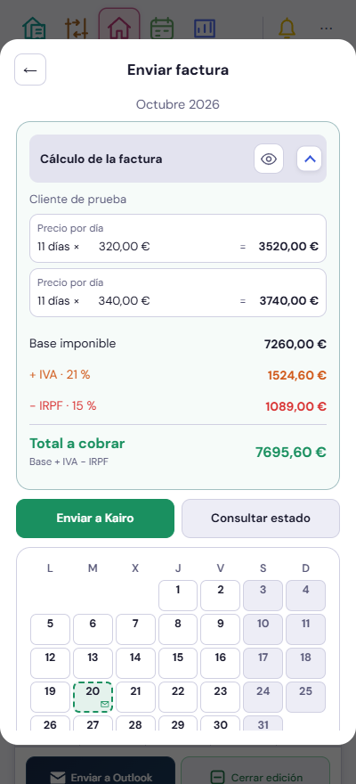
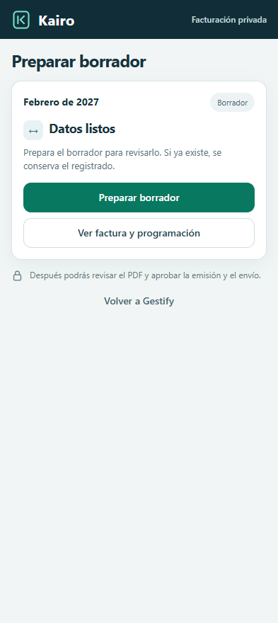
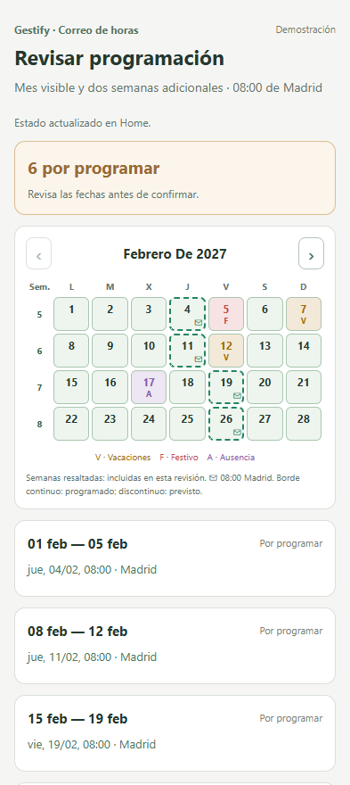

Datos ficticios. El mes de la factura se elige en Home; el cálculo aparece primero y el calendario debajo de las acciones. Se retiran los enlaces finales de configuración y JSON. La configuración sigue en Ajustes.
Factura
Cálculo abierto al entrar y mes fijo. El calendario continúa debajo de Enviar a Kairo y Consultar estado.

«Preparar borrador» sustituye a «Recibir preparación». La revisión y aprobación siguen siendo pasos distintos.

Programación de horas
V/F/A y fechas de envío: borde continuo para programaciones existentes; discontinuo para las propuestas. Las semanas incluidas se resaltan.

El mes siguiente muestra las dos semanas adicionales. Las demás quedan atenuadas. Cambiar de mes no consulta Outlook.